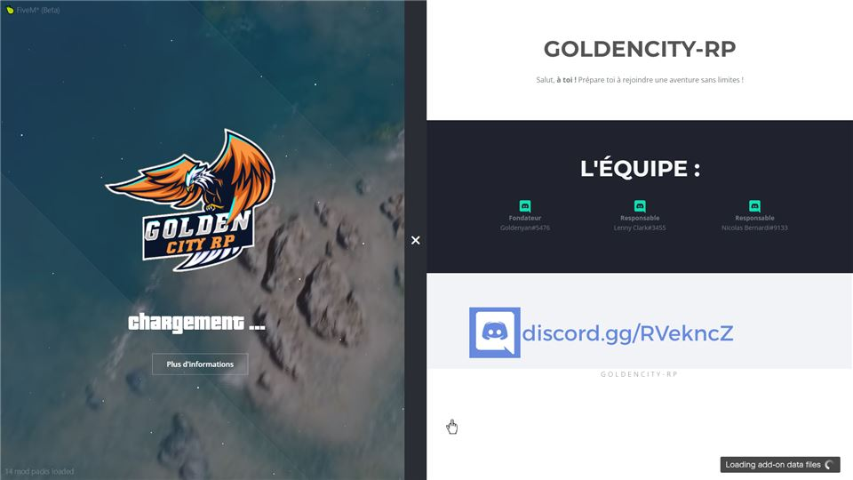
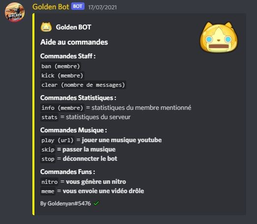
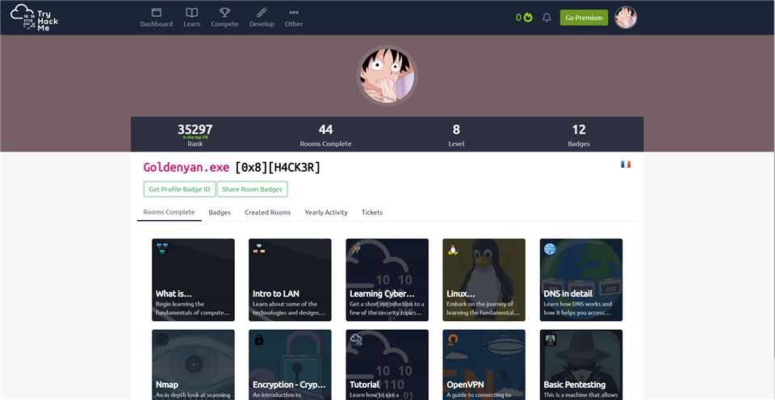
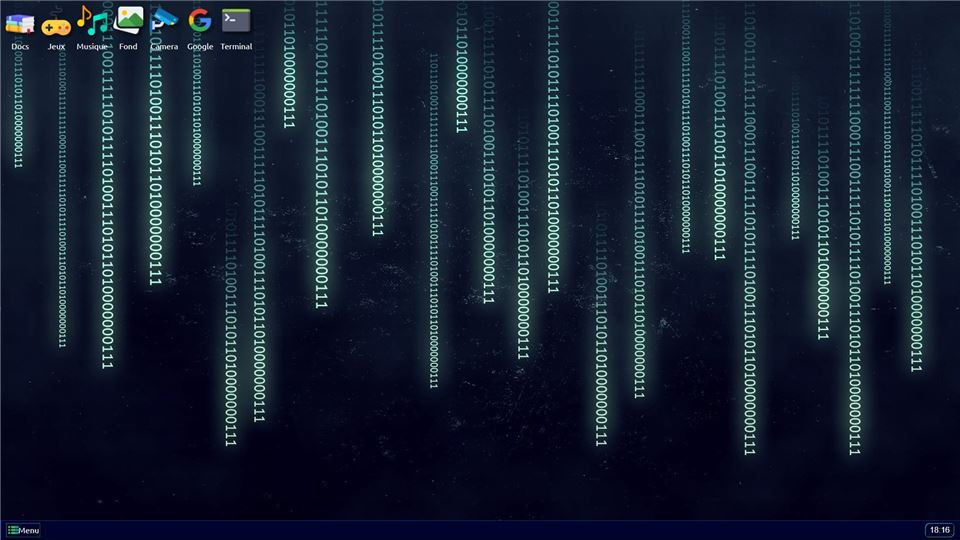
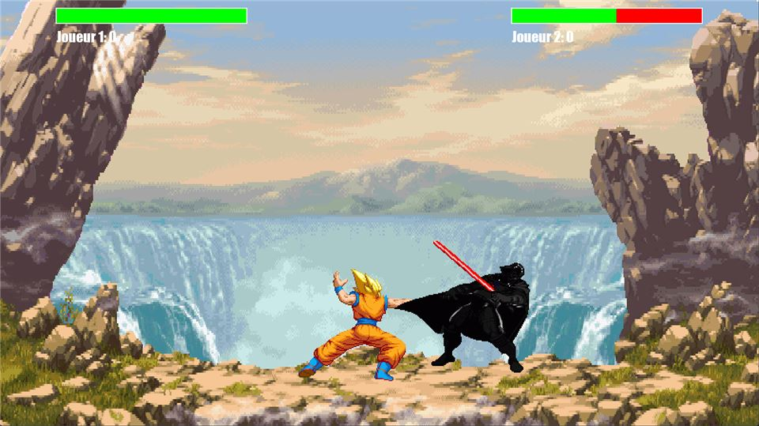
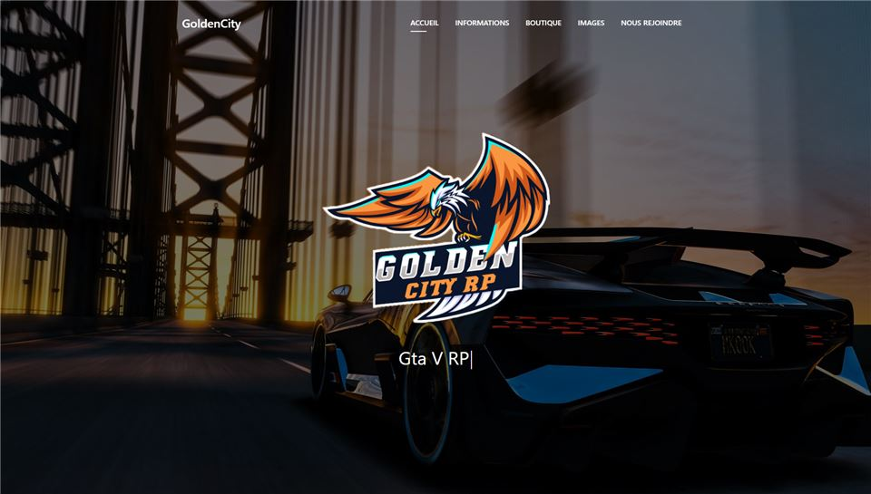
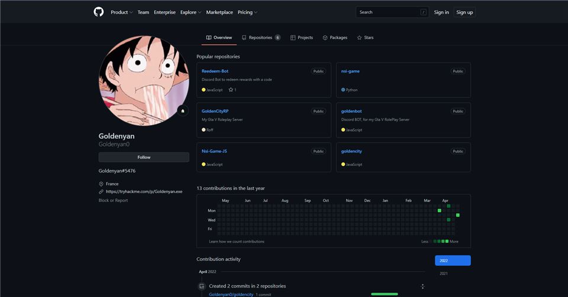
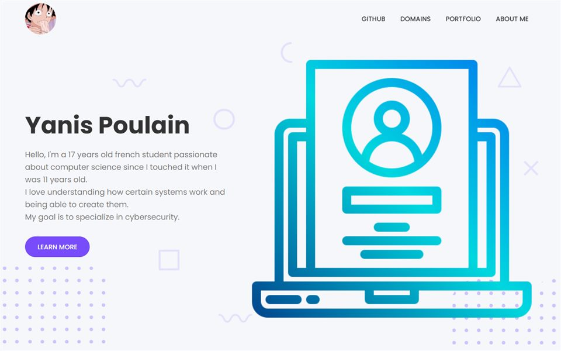
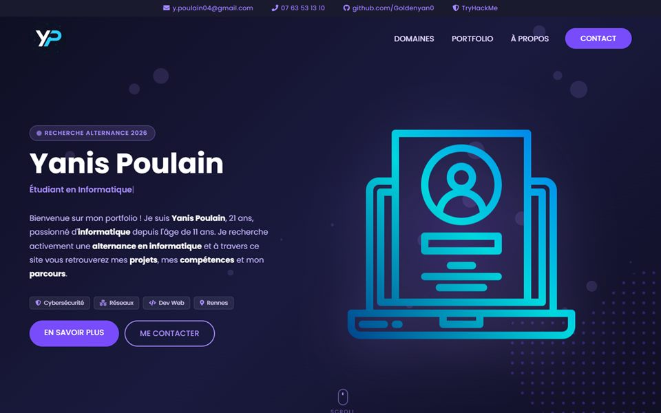
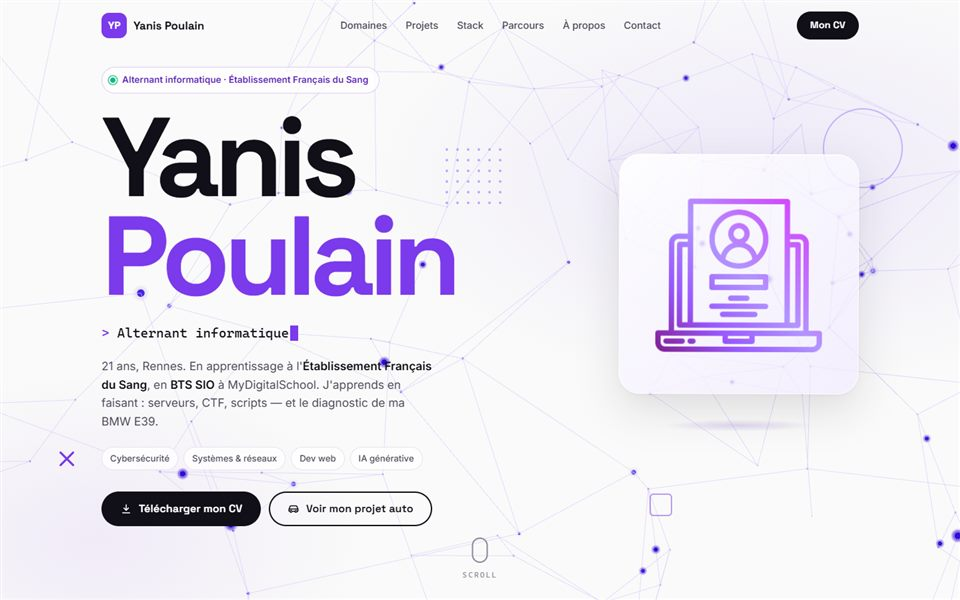

Cybersécurité
Machines et challenges CTF sur TryHackMe et HackTheBox. Vulnérabilités web et système, sécurité offensive et défensive.
Alternant informatique · Établissement Français du Sang
21 ans, Rennes. En apprentissage à l'Établissement Français du Sang, en BTS SIO à MyDigitalSchool. Deux passions : l'informatique et l'automobile. J'apprends en faisant — serveurs, scripts, réseaux, et le diagnostic de ma voiture.
Ce que je fais
Comprendre comment ça marche, le casser proprement, le réparer, le documenter.
Machines et challenges CTF sur TryHackMe et HackTheBox. Vulnérabilités web et système, sécurité offensive et défensive.
En alternance à l'EFS : Active Directory, GPO, sauvegardes Veeam, Hyper-V, GLPI, support utilisateurs. Linux, TCP/IP, DNS, DHCP, SSH.
HTML, CSS, JavaScript, Python, Lua, SQL, scripts PowerShell. Bots Node.js / Discord.js, scripts FiveM, jeux.
Claude, ChatGPT et l'assistant Muse, en complément de mon apprentissage et de mes projets : TikTok, game design Roblox, scripting, refonte de ce portfolio.
Pourquoi moi
Étudiant sans expérience
Chef de projet du volet informatique de l'ouverture de la Maison du Don de Rennes, administrateur systèmes à l'EFS, ex-gérant d'un serveur FiveM de 100+ joueurs — et mécanicien du dimanche sur ma voiture.
Compétences théoriques
Tout ce que je sais, je l'ai pratiqué : administration systèmes à l'EFS, ce site codé à la main, le diagnostic de ma BMW, mes serveurs FiveM, mes bots Discord, mes challenges TryHackMe.
Découvre le monde de l'entreprise
En poste à l'EFS depuis août 2026 — et 4 expériences avant.
L'IA va le remplacer
Je l'utilise comme un levier : ce portfolio, ma voiture — diagnostic et entretien —, mes scripts — l'IA accélère, mais c'est ma compréhension qui décide.
Projets
Chef de projet du volet informatique — ouverture du nouveau site : déploiement des postes de travail, imprimantes, réseau et automates ; coordination des prestataires et des équipes ; suivi des commandes, directives, recettes et mise en service.

Création et gestion complète d'un serveur GTA V roleplay : scripting Lua, architecture serveur, base MySQL, communauté de 100+ joueurs actifs.

Ma voiture de 2002, entretenue et diagnostiquée moi-même : lecture du calculateur, corrections carburant, test fumée — mesure, hypothèse, vérification.

Bots multifonctions en Node.js / Discord.js : modération, musique, commandes personnalisées, déployés sur plusieurs serveurs.

Salles CTF et machines : réseau, Linux, Nmap, chiffrement, pentest. Classement actif sous le pseudo Goldenyan.exe.

Jeu en JavaScript pur, réalisé dans le cadre de la spécialité NSI.

Jeu de combat en Python avec interface graphique, développé en binôme.

Site vitrine responsive du serveur FiveM roleplay, publié sous son ancien nom GoldenCity.

Mes projets publics : bots, jeux, sites web et outils.
1 / 9
Glissez, utilisez les flèches ou cliquez une carte pour la faire venir devant.
Stack technique
HTML / CSS85 %
Python75 %
JavaScript70 %
Lua70 %
SQL70 %
Windows CMD & admin80 %
TCP/IP · DNS · DHCP · HTTP(S)60 %
Linux / Debian60 %
SSH / FTP / SMTP55 %
Nmap55 %
Wireshark50 %
Burp Suite40 %
Metasploit40 %
Parcours
Depuis août 2026
Établissement Français du Sang
Administration systèmes et réseaux : Active Directory, sauvegardes Veeam, déploiement de postes, GLPI, support utilisateurs N1. Chef de projet du volet informatique de l'ouverture de la Maison du Don Rennes Longchamps.
Depuis août 2026
Ma voiture — entretien et diagnostic
Mécanique et diagnostic électronique menés moi-même, chaque intervention documentée dans un carnet de bord. Voir le projet
Depuis février 2026
AAA Locatour / Europcar — Rennes
Accueil et check-out clients, contrôle des véhicules (niveaux, carburant, pression), suivi des immobilisations et coordination avec l'atelier.
2025
Sixt / Group L — Rennes Gare
Contrôle et préparation des véhicules de location, remise en main propre, convoyages inter-agences.
2025
McDonald's — Pleumeleuc
Travail en forte affluence, normes d'hygiène et de sécurité, accompagnement des nouveaux équipiers.
2024
RGIS — Bretagne
Comptage et contrôle de stocks avec lecteurs codes-barres et logiciels dédiés.
2026 — 2028
MyDigitalSchool — en alternance
Ma reconversion après la licence : services informatiques aux organisations, en alternance à l'Établissement Français du Sang.
2024
Université de Rennes 1 — ISTIC
Algorithmique, bases de données, développement web, réseaux, génie logiciel. Après cette première année, je me suis réorienté vers le BTS SIO en alternance.
2023
Lycée Victor et Hélène Basch — Rennes
Spécialités Mathématiques et Numérique et sciences informatiques : algorithmique, Python, réseaux, bases de données.
À propos
21 ans, Rennes. Passionné d'informatique depuis l'âge de 11 ans, et d'automobile. Aujourd'hui alternant à l'EFS et en BTS SIO.
Par la pratique : serveurs de jeu, challenges de sécurité, dépannage de PC pour mes proches. Curieux et autonome.
Est-ce que je suis l'actualité ? Oui — j'utilise l'intelligence artificielle en complément de mon apprentissage et de mes projets.
L'automobile tient une grande place dans ma vie : mécanique et diagnostic sur ma voiture. Et du sport : natation, musculation.
Mon rapport à l'IA
Avancer avec l'IA est une compétence cruciale à maîtriser.
Elle doit toujours être maîtrisée et utilisée en complément — jamais sans base solide derrière.
Comment ce site a été créé
Muse a analysé l'ancien portfolio (erreurs, contenu obsolète), défini l'architecture en 3 pages, rédigé le cahier des charges complet, fourni les images de référence des pièces, et préparé mes photos (renommage, floutage des plaques).
Mes propres photos et les images de référence servent de guide pour le rendu voulu.
À partir de mes consignes écrites, Claude Code a construit le site page par page, en vérifiant chaque étape : affichage sur mobile, erreurs, fidélité du contenu.
Des modules ajoutés à Claude Code, par exemple pour choisir le modèle le mieux adapté à chaque tâche.
Chaque étape y est enregistrée : l'historique garde toutes les versions, et GitHub Pages publie le site en ligne.

2022 — 2024
Créée à 17 ans, en anglais, sur un thème clair, avec un objectif affiché : la cybersécurité. En 2024, une seule mise à jour : l'âge.

Avril 2026
Passage au français, thème sombre, bandeau de contact, projets filtrables. Le site sert alors à chercher une alternance.

Octobre 2026 · vous êtes ici
Refonte complète, conçue avec l'IA : thème clair, réseau 3D, animations au scroll, CV imprimable et page dédiée à mon projet automobile.
Contact